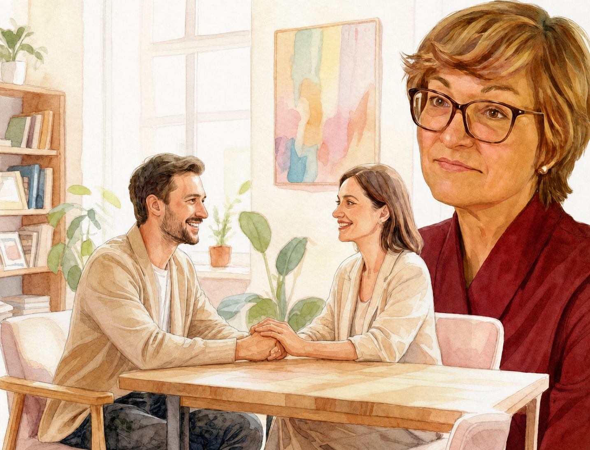

01
Повторяются похожие истории
Партнёры меняются, но в отношениях снова появляются знакомые чувства: одиночество, тревога или постоянная борьба за близость.

Терапевтическая группа для тех, кто хочет разобраться, как строит близкие отношения: чего ждёт от партнёра, о чём молчит и что хотел бы изменить.
Участие индивидуальное — приходить вместе с партнёром не нужно.
Какими могут быть отношения, в которых не приходится выбирать между близостью и собой? Где можно прямо говорить о своих желаниях, не соглашаться, просить о поддержке и не брать всю ответственность на себя?
У каждого из нас есть привычное представление о близости: сколько в ней должно быть контакта, свободы, заботы и дистанции. На группе мы будем разбираться, откуда взялись эти представления, помогают ли они сегодня и что хочется изменить.
В близких отношениях мы часто повторяем то, чему когда-то научились: добиваться внимания, избегать конфликтов, уступать, контролировать или молчать о важном.
Задача группы — не найти «правильную» модель отношений, а лучше замечать собственные реакции и получать больше свободы в выборе.
Партнёры меняются, но в отношениях снова появляются знакомые чувства: одиночество, тревога или постоянная борьба за близость.
Вы часто подстраиваетесь, стараетесь всё контролировать, молчите о важном или доказываете, что заслуживаете любви.
Разобраться, что происходит между вами сейчас, а что повторяется из прежних отношений или семейного опыта.
Жёсткого сценария у встреч нет. Мы будем отталкиваться от вопросов участников и от того, что возникает в группе. Темы в расписании — ориентиры, а не программа, которой нужно строго следовать.
Каждый может сказать, с чем пришёл и о чём ему важно поговорить сегодня.
Говорим о конкретных ситуациях, чувствах и привычных реакциях. Я задаю вопросы и помогаю увидеть то, что бывает трудно заметить самостоятельно.
Собираем мысли и наблюдения, к которым можно вернуться после встречи.
После первой встречи новые участники присоединиться уже не смогут. До старта мы созвонимся, познакомимся и обсудим, подходит ли вам группа.
Я практикующий психолог, семейный психолог и сексолог, сертифицированный гештальт-терапевт. Более десяти лет работаю индивидуально, с парами и терапевтическими группами.
Мне важно не торопить человека и не предлагать готовых ответов. На встречах можно говорить о сложных и неловких вещах без страха оценки.
Нет. Каждый участвует сам и работает со своим опытом отношений. Это не семейная консультация и не терапия пары.
Нет. Вы сами решаете, о чём готовы говорить и насколько подробно. На первых встречах можно больше слушать и присматриваться.
Для группы важна регулярность, поэтому лучше заранее свериться со всеми датами. Условия пропусков и оплаты мы обсудим до начала встреч.
На коротком созвоне вы сможете рассказать, с чем хотели бы прийти, узнать больше о правилах и задать вопросы. После разговора мы вместе решим, стоит ли вам участвовать.
Напишите мне в Telegram или ВКонтакте. Мы созвонимся на 15–20 минут: вы сможете немного рассказать о своей ситуации, а я отвечу на вопросы о группе. После разговора можно спокойно решить, подходит ли вам участие.
Знакомство ни к чему не обязывает. Можно написать: «Здравствуйте! Хочу узнать об участии в группе»